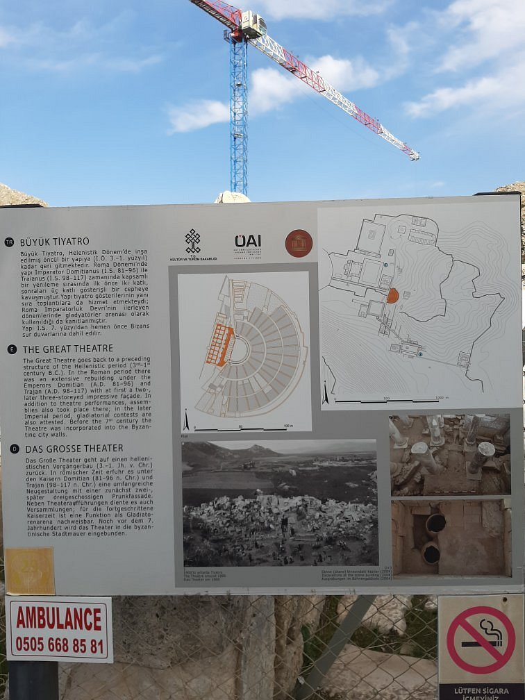
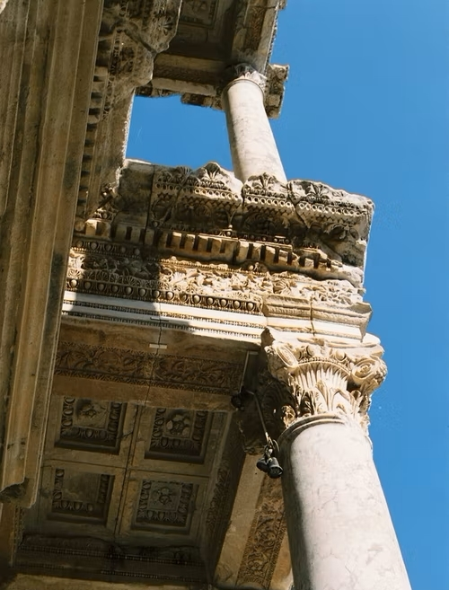

GALERİ




UNESCO Dünya Miras Listesi’nde bulunan Efes, antik çağın en önemli merkezlerinden biridir. Kent, tarih öncesi dönemden başlayarak Helenistik, Roma, Doğu Roma, Beylikler ve Osmanlı dönemleri boyunca yaklaşık 9 bin yıl kesintisiz yerleşim görmüş ve her dönem çok önemli bir kültür ve ticaret merkezi olmuştur. Antik Kentte bulunan ve dönemin en büyük açık hava tiyatrosu özelliğini taşıyan Efes Antik Tiyatrosu 24 bin kişi kapasitelidir. Panayır Dağı’nın güney eteklerinde yer alan tiyatro, ilk olarak Helenistik Dönemde inşa edilmiştir. Bugün görülen kalıntılar MS 1. ve 2'nci yüzyıla aittir.
Efes Antik Tiyatrosu antik tiyatroların ortak unsurları olan sahne, orkestra ve cavea’dan oluşur. İlk zamanlarda tiyatro basit bir sahne binası, orkestra ve tek oturma bölümünden oluşuyordu. Augustus Dönemi’nden itibaren kentin hızlı gelişimiyle tiyatro da büyütülmüştür.
İzmir Selçuk’ta bulunan Efes Antik Tiyatrosu, Efes’te Panayır Dağı’nın eteği üzerine topografik yapıdan faydalanılarak inşa edilmiştir. Toplamda 3 katlı sahne binası olan yapının her bir katı, kentin zenginliği ve ihtişamına göre farklı dönemlerde eklenmiştir. İlk tiyatronun inşa edildiği tarih, Helenestik Döneme (M.Ö. 3.–1. yüzyıl) kadar uzanmakta olup, bugünkü kalıntılar M.S. 1-2. yüzyıla dayanmaktadır. Roma İmparatoru Cladius döneminde inşa süreci başlayan yapının tamamlanması yaklaşık 60 yıl kadar sürmüştür.
İmparator Neron ve Septimius Severus dönemlerinde sahne binasının ikinci ve üçüncü katları eklenmiştir. 25 bin kapasitelik tiyatronun her biri 22 basamaklı olarak bölümlenmiş, basamaklardan orkestraya yakın alan tahrip olmuştur. Efes Tiyatrosu’nun auditoriumu ima, media ve summa olmak üzere üç bölümden oluşmaktadır ki, tiyatrolarda az rastlanan bir durumdur. Tamamen iç bükey bir şema sergileyen Auditorium, bu özelliği ile ses akustiğinde meydana gelecek kusurları en aza indirgemektedir.
18 m. yükseklikteki sahne binasının içe bakan taraflarında Neron’un ekletmiş olduğu heykeller, oymalar ve çeşitli sanatsal eserler bulunmaktadır. Etrafı bir kanal ile çevrili olan ve ilk inşa edildiğinde at nalı biçimindeki orkestra bölümü ise Roma döneminde yarım daire formuna dönüşerek orijinalliğini kaybetmiştir.
Yapıyı en büyük tiyatro olma özelliği dışında St. Paul’un vaazlarının da burada vermesi adına Hristiyanlık açısından önem teşkil etmektedir. Günümüzde sahne bölümü yıkılmış olan tiyatronun, inşa edildiği dönemde sadece sanatsal faaliyetler için değil, gladyatör savaşlarına da ev sahipliği yaptığı bilinmektedir.